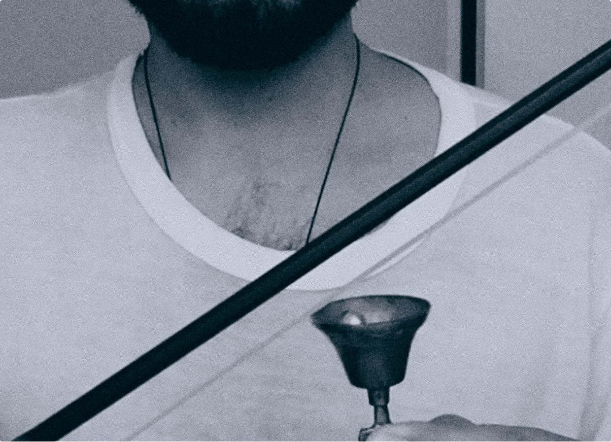

Born in Chile and based in Southern Italy’s Salento region, Laika Rei develops a transdisciplinary practice grounded in sound, performance, and movement. His work investigates how vibration, gesture, and distance shape perceptual environments where listening functions as both a sensory act and a way of recalibrating presence within space.
Guided by a Latin American sensibility attuned to the affective and ancestral, Rei approaches sound as a continuum between presence, decay and disappearance. His works emerge from encounters with landscapes, gestures, and remnants—elements that resist capture yet remain perceptually insistent. This attention to the invisible and the residual underpins his search for listening modes that hold the political and the poetic in tension, positioning vibration as a site of memory, relation, and transformation.
Across residencies, festivals, and collaborative frameworks in Chile and Europe, Rei has developed works with choreographers, performers, and visual artists that extend sound into gesture and site specific compositions. These encounters have shaped an approach that privileges process over form, cultivating sonic environments that operate as porous rituals—spaces in which the boundaries between human and nonhuman, intimate and architectural, remain in continual negotiation. Through his ongoing project FUNA, he deepens this inquiry into collapse, desire, and spectral ecology, articulating a sonic mythology where listening becomes an act of invocation, care, and release. His practice emerges as a sustained exploration of resonance as a mode of coexistence—at once material, affective, and relational.